🖼️ Любимые мемы и стикеры Наши
💸 Можешь дать мне 30 тыс 💵
🤦♀️ Эстелла и маячок 👷♀️
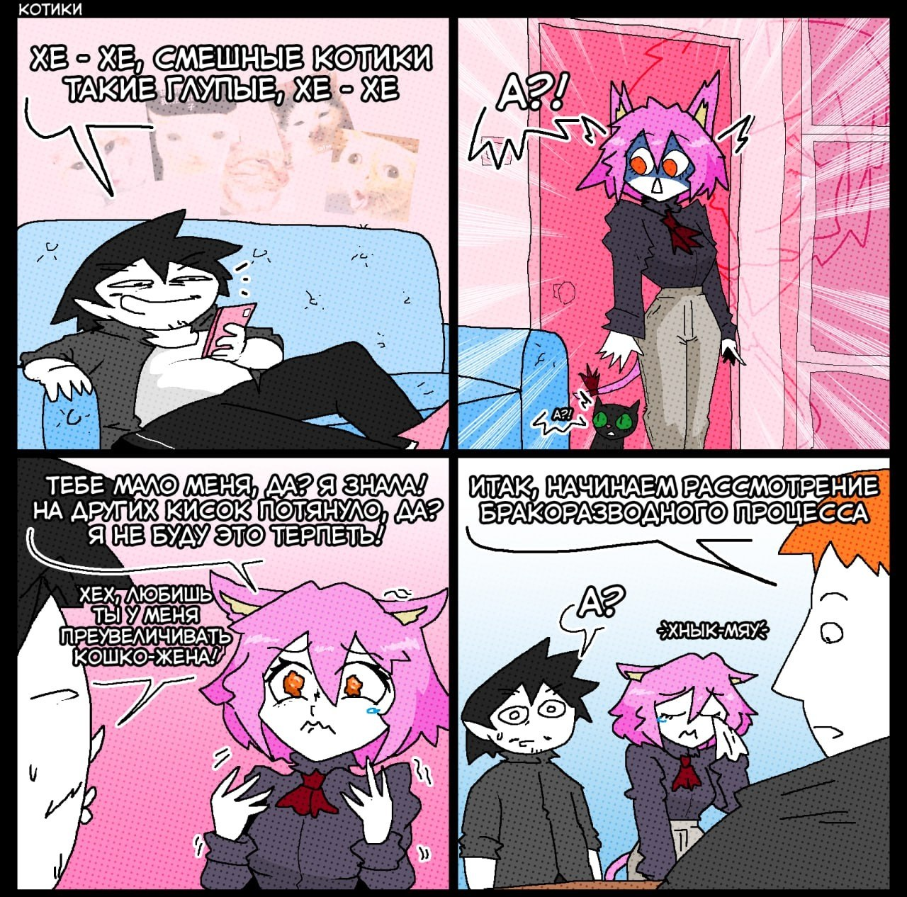
😻 Комикс, с котоженой 😿
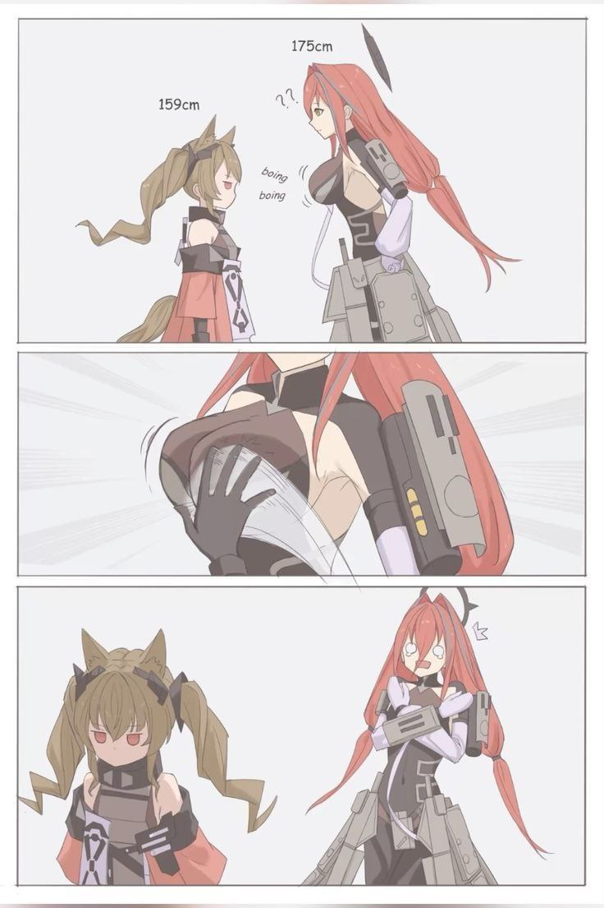
👩 Комикс с Гил и Эмбер 😡
...когда рассходимся))) 🧑
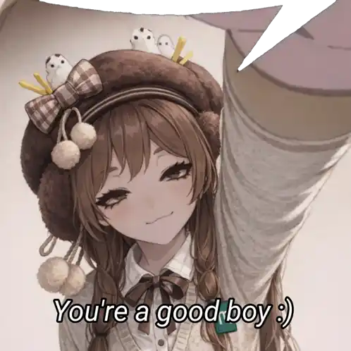
💘 А это когда...
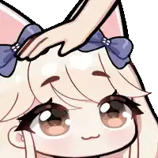
...ты гладишь меня по голове))) 💝
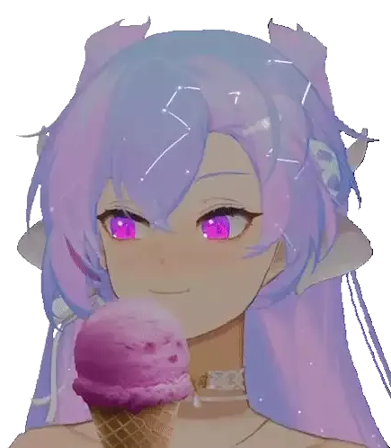
🍧 А это моё...
...любимое мороженное))) 🍦
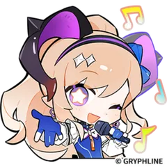
🎶 А это твои любимые...
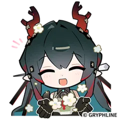
...стики с игрой 🌸
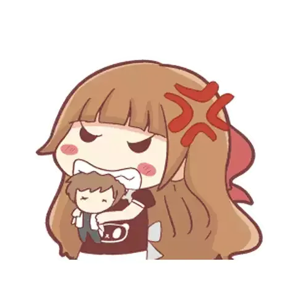
😠 Злая Мира 😡
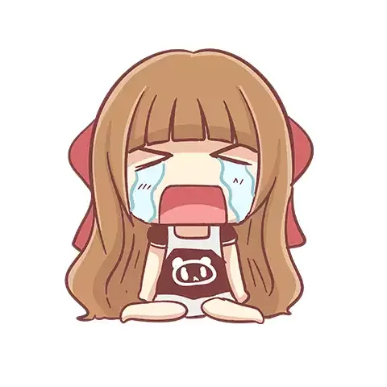
😥 Грустная Мира 😭
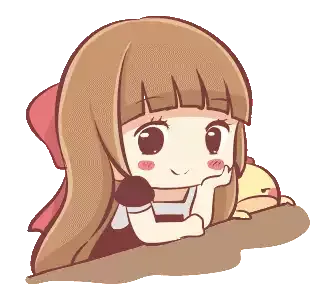
☺ Подмигивающая Мира 😏
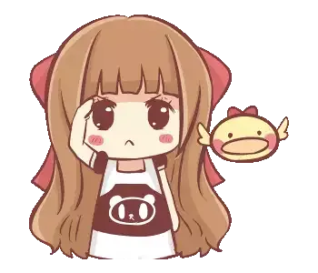
🫡 Уважающая Мира 👌
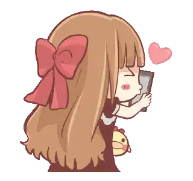
😘 Целующаяся Мира 📲
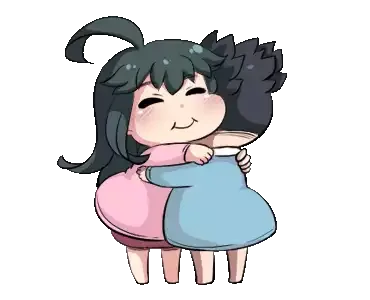
😳 Хватающая Мира) 😏
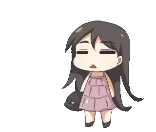
🛌 Сонная Мира 😪
* тапни по карточке
😉 Наши повадки и приколы 🔥
♾ «Наша с тобой синхронизация)))»
💤 «Ритуал перед сном, после которого приятно спать с улыбкой)))»
🌅 «Как мы друг другу, говорим до сегодня/утра/до обеда xD»
🖥 «Наши приколы с танками и как я заставляю тебя поиграть»
👨 «Я 25 летний xD»
👩🦰 «Твоя сестра Эмили из зетки xD»
⌛ «Моё нету времени»
⏲ «То самое моё ПОТОМ))»
👨⚖️ «Мой вечный суд и "Расскажешь в суде" xD»
🏠 «Тик ток, это наш дом)))»
🏚 «Деревня-дом, город-отпуск xD»
⁉ «Наша проверка задержки в ТТ)»
💚 Слова, которые я хочу сказать тебе ∞
листай вниз ❤️
📗 Сборник всех моих рассказов
🔒 Закрыто
Эта страница пока недоступна, но скоро здесь появится что-то особенное.
Эта страница пуста)
🚧 Ведутся программисткие работы 🚧
Скоро тут будет, кое что очень интересное)))